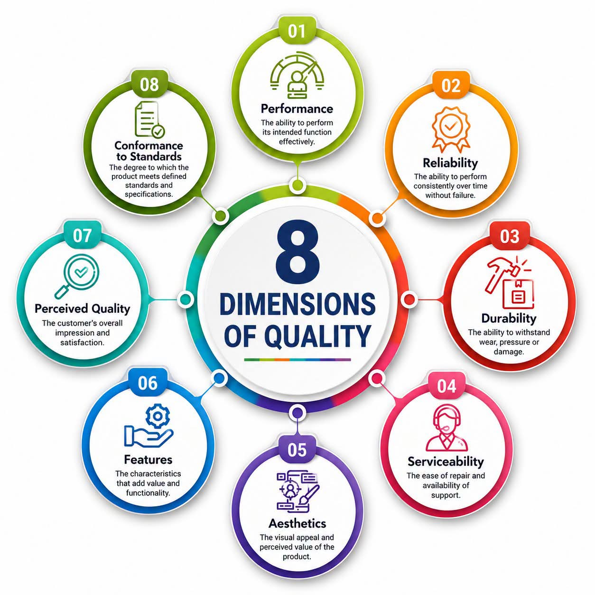

Gerimis menderas di luar jendela kaca sebuah kedai kopi bergaya industrial di kawasan Ciumbuleuit, Bandung. Aroma petrikor menguar, bercampur dengan wangi kopi arabika yang baru saja diseduh. Di sudut ruangan, sebuah meja kayu jati besar dipenuhi dengan gulungan cetak biru, tablet, dan beberapa prototipe komponen mekanik. Empat orang duduk mengelilingi meja tersebut dengan raut wajah yang bervariasi antara frustrasi, antusias, dan kelelahan yang mendalam. Mereka adalah Dimas, Nadia, Bima, dan Raka. Empat sekawan, alumni Teknik Industri dari sebuah institut ternama di kota ini, yang kini mempertaruhkan sisa tabungan mereka untuk sebuah perusahaan rintisan bernama InnoSort. Produk andalan mereka? Sebuah mesin sortir biji kopi cerdas berbasis Internet of Things (IoT) dan kecerdasan buatan.
Nadia, satu-satunya wanita di meja itu, menatap layar tabletnya dengan dahi berkerut. Rambut sebahu miliknya diikat asal-asalan. Ia baru saja merevisi desain selubung luar mesin untuk yang kesebelas kalinya. Sebagai seseorang yang mendalami ergonomi dan desain produk, Nadia memiliki obsesi tersendiri terhadap bagaimana sebuah alat berinteraksi dengan penggunanya, baik secara fisik maupun psikologis. Sementara itu, di seberangnya, Dimas, sang CEO yang selalu meledak-ledak dengan ide ekspansif, tengah berdebat panas dengan Raka, sang manajer jaminan kualitas yang kaku dan sangat berpatokan pada standar statistika.
"Performance is non-negotiable!" Dimas mengebrak meja perlahan, memastikan tidak ada kopi yang tumpah, namun cukup untuk menarik perhatian Bima yang sedari tadi sibuk mengkalibrasi sensor optik. "Kita sedang membangun mesin kelas industri, bukan mainan anak-anak. Prototipe terakhir kita hanya mampu menyortir empat ratus biji per menit. Itu tidak cukup! Kinerja mesin kita, fungsi utamanya, harus bisa menembus seribu biji per menit. Itulah satu-satunya cara kita bisa mengalahkan kompetitor dari luar negeri yang sudah memonopoli pasar."
Dimas sedang berbicara tentang dimensi pertama dari kualitas: Performance atau kinerja. Bagi Dimas, sebuah produk tidak ada nilainya jika tidak mampu menjalankan tugas intinya secara efektif. Ia percaya bahwa kekuatan pemrosesan algoritma penglihatan komputer mereka harus didorong hingga batas maksimal. Jika mesin tidak bisa mendeteksi cacat pada biji kopi dalam hitungan milidetik, maka seluruh proyek ini adalah sebuah kegagalan. Ia menghabiskan berminggu-minggu merancang ulang arsitektur mikrokontroler agar daya komputasinya meningkat secara eksponensial.
Namun, Bima menghela napas panjang. Ia melepaskan kacamata bacanya dan memijat pangkal hidungnya. Sebagai ahli keandalan sistem, pandangan Bima jauh lebih pragmatis dan terukur oleh probabilitas.
"Dimas, aku paham ambisimu," ucap Bima dengan nada datar yang menjadi ciri khasnya. "Tetapi, kinerja puncak yang kau paksa itu datang dengan harga yang sangat mahal. Motor servo kita dipaksa bekerja di luar batas spesifikasi termalnya. Jika kita jalankan di seribu biji per menit, aku bisa jamin sistem akan gagal dalam waktu kurang dari tujuh puluh dua jam operasi nonstop." Bima memutar papan tulis kecil di dekat mereka dan mulai menuliskan sebuah persamaan diferensial dasar yang menjadi makanan sehari-hari mahasiswa teknik industri.
"Ini adalah fungsi reliabilitas atau Reliability dasar kita, Dimas," lanjut Bima, menunjuk ke arah persamaan tersebut. "Keandalan adalah probabilitas bahwa mesin kita akan melakukan fungsinya secara konsisten dalam jangka waktu tertentu tanpa mengalami kegagalan. Dengan asumsi laju kegagalan, atau lambda (\( \lambda \)), bernilai konstan. Saat kau memacu mesin ke batas maksimal, nilai lambda melonjak eksponensial karena tegangan termal. Probabilitas mesin kita bertahan selama satu bulan operasi penuh menjadi mendekati nol. Petani kopi dan pemilik pabrik roastery tidak butuh mesin yang sangat cepat tapi mogok setiap tiga hari sekali. Mereka butuh konsistensi."
Raka yang sedari tadi diam sambil menganalisis kurva distribusi normal di layar laptopnya, akhirnya mengangguk setuju. "Bima benar. Kinerja tanpa keandalan adalah sebuah ilusi operasional. Tapi kita juga melupakan dimensi lain yang sering kali beririsan, yaitu daya tahan."
"Mari kita bicara tentang Durability," ujar Raka. Ia mengambil sebuah roda gigi berbahan polimer dari atas meja dan memutarnya. "Daya tahan berkaitan dengan umur pakai produk sebelum materialnya benar-benar terdegradasi secara fisik dan tidak bisa digunakan lagi. Kita menggunakan material komposit untuk sabuk konveyornya. Mesin ini akan ditempatkan di pabrik pengolahan kopi di daerah pegunungan, mungkin di Pangalengan atau Ciwidey, di mana tingkat kelembapan dan debunya sangat ekstrem. Apakah komponen ini mampu menahan tekanan korosif dan abrasi dari kotoran organik selama lima tahun penuh?"
Nadia mencondongkan tubuhnya ke depan. Matanya berbinar karena diskusi mulai menyentuh ranah rancang bangun fisik yang ia gemari. "Itu membawa kita pada masalah Serviceability," potong Nadia. "Anggaplah komponen ini pada akhirnya aus, karena tidak ada material yang abadi di dunia ini. Pertanyaannya adalah, seberapa mudah mesin ini diperbaiki? Aku melihat rancangan internalmu, Dimas. Kau menempatkan modul sensor optik dan papan sirkuit utama di balik tiga lapis panel yang disekrup mati. Jika ada masalah troubleshooting, teknisi lokal di lapangan harus membongkar seluruh mesin selama empat jam hanya untuk mengganti satu kabel."
Nadia dengan sigap memproyeksikan desain CAD 3D dari tabletnya ke monitor layar datar di dinding kedai kopi. Ia menunjukkan anatomi mesin mereka. "Sebuah mesin industri yang baik harus memiliki kemudahan servis. Serviceability berarti kemudahan perbaikan dan ketersediaan dukungan teknis. Kita harus membuat arsitektur modular. Plug and play. Jika sensor rusak, cabut slotnya, pasang yang baru dalam hitungan menit, bukan jam. Ingat, waktu henti mesin (downtime) adalah kerugian finansial yang nyata bagi klien kita."
Hujan di luar semakin lebat, mengaburkan pandangan ke arah lampu-lampu jalanan kota Bandung yang mulai menyala kekuningan. Pesanan kopi gelombang kedua mereka tiba, diantarkan oleh seorang barista berbaju hitam yang menatap meja mereka dengan sedikit heran karena dipenuhi diagram teknik. Setelah barista itu pergi, Nadia kembali mengambil alih pembicaraan.
"Dan sementara kalian semua berdebat tentang fungsi dan angka-angka Mean Time Between Failures, kalian sama sekali mengabaikan aspek visual. Dimensi Aesthetics," kata Nadia sambil mengetuk layar tabletnya. "Dimas, Bima, Raka... lihat prototipe kita saat ini. Bentuknya seperti kotak amunisi militer sisa perang. Kaku, bersudut tajam, dengan kabel-kabel yang diikat asal-asalan."
Dimas memutar bola matanya. "Nad, ini mesin pabrik, bukan ponsel pintar atau mobil sport mewah. Estetika itu subjektif dan sekunder."
"Salah besar!" kilah Nadia dengan nada tegas yang membungkam Dimas. "Sebagai lulusan teknik industri, kau seharusnya tahu bahwa desain fisik mengomunikasikan nilai! Estetika adalah daya tarik visual dan nilai yang dirasakan oleh mata penggunanya. Pemilik pabrik kopi saat ini bukan sekadar buruh, mereka adalah pengusaha modern, roaster kopi specialty yang sangat peduli pada citra. Jika mereka harus menginvestasikan ratusan juta rupiah untuk alat kita, alat itu harus terlihat sepadan dengan harganya. Kurva yang halus, panel matte black dengan aksen aluminium, antarmuka layar sentuh yang elegan. Desain yang baik membangkitkan rasa percaya sebelum mesin itu bahkan dihidupkan."
Dimas terdiam sejenak, meresapi kata-kata Nadia. "Baiklah, aku mengerti maksudmu. Jika kita berbicara tentang nilai jual, maka kita tidak bisa melupakan Features. Karakteristik tambahan yang memberikan nilai dan fungsionalitas di luar ekspektasi dasar." Dimas kembali bersemangat. "Bagaimana jika kita menambahkan konektivitas cloud? Aplikasi seluler yang memberikan laporan real-time ke ponsel pemilik pabrik? Jadi mereka tahu persis berapa persen hasil panen yang masuk kategori premium hari itu."
Nadia tersenyum tipis. "Sekarang kau mulai mengerti bahasa pasar, Dimas."
"Tunggu dulu, kawan-kawan," potong Raka. Suaranya berat dan penuh dengan kehati-hatian. "Semua itu bagus. Kecepatan, desain, fitur aplikasi seluler. Tapi kita tidak bisa melangkah ke pasar jika kita gagal pada dimensi yang paling fundamental secara hukum dan teknis: Conformance to Standards."
Raka membuka sebuah dokumen tebal berlabel ISO di laptopnya. "Kesesuaian terhadap standar adalah sejauh mana produk kita memenuhi standar dan spesifikasi yang telah ditetapkan secara universal. Mesin kita menangani bahan makanan. Ada regulasi keamanan pangan, standar emisi elektromagnetik untuk perangkat IoT, dan spesifikasi toleransi mekanik. Jika kita tidak memiliki sertifikasi, mesin ini ilegal untuk dijual di tingkat korporasi."
Ia kemudian menuliskan sebuah rumus di papan tulis, tepat di bawah rumus reliabilitas Bima.
"Ini adalah Process Capability Index," terang Raka. "USL adalah batas spesifikasi atas, LSL adalah batas spesifikasi bawah, dan sigma (\( \sigma \)) adalah standar deviasi dari variasi proses mesin kita. Kita harus membuktikan secara statistik bahwa akurasi pemilahan biji kopi kita secara konsisten berada dalam toleransi ketat yang dijanjikan. Nilai \( C_p \) kita harus di atas 1,33. Jika tidak, itu berarti proses kita tidak stabil, dan kita akan menghasilkan terlalu banyak produk cacat atau membuang biji kopi yang sebenarnya bagus. Kesesuaian bukanlah sekadar mencentang kotak di atas kertas, itu adalah komitmen terhadap janji presisi."
Keempatnya terdiam. Suara hujan di atap dan alunan musik lo-fi dari pengeras suara kafe seolah menjadi latar bagi pemikiran mereka yang berpacu. Mereka baru menyadari betapa kompleksnya mendefinisikan kata 'kualitas'. Kualitas bukanlah entitas tunggal, melainkan sebuah spektrum yang luas.
Nadia memecah keheningan dengan lembut. "Ada satu dimensi terakhir," ucapnya sambil memproyeksikan sebuah gambar diagram melingkar ke layar monitor. Gambar itu penuh dengan warna, memuat delapan elemen yang membentuk sebuah kesatuan yang harmoni.

"Perceived Quality," Nadia membacakan teks pada dimensi ketujuh di diagram tersebut. "Kualitas yang dipersepsikan. Kesan dan kepuasan keseluruhan pelanggan. Ini adalah akumulasi dari segalanya. Merek kita, InnoSort. Bagaimana sejarah masa lalu kita, reputasi kita, ulasan dari mulut ke mulut. Bahkan jika mesin kita sesekali mengalami error kecil, jika pelayanan teknisi kita ramah, jika desain kita berkelas, pelanggan mungkin masih menganggap produk kita berkualitas tinggi karena reputasi merek yang kuat dan positif."
Dimas menatap diagram di layar itu lamat-lamat. Delapan lingkaran yang mengelilingi satu pusat: Dimensions of Quality. 1. Kinerja, 2. Keandalan, 3. Daya Tahan, 4. Servisabilitas, 5. Estetika, 6. Fitur, 7. Kualitas yang Dipersepsikan, dan 8. Kesesuaian Terhadap Standar.
"David Garvin dari Harvard Business School," gumam Dimas pelan. "Kita pernah mempelajari ini di semester tiga mata kuliah Pengendalian Kualitas Statistika. Aku menganggapnya hanya sebagai teori hafalan untuk ujian. Kini, teori ini menghantam kita di dunia nyata."
Bima merapikan catatan-catatannya. "Jadi, kita tidak bisa hanya memilih satu dan mengorbankan yang lain. Ini bukan permainan jumlah nol (zero-sum game). Ini adalah soal optimasi multivariabel. Kita turunkan sedikit target kinerja, dari seribu menjadi delapan ratus biji per menit, demi menaikkan indeks keandalan secara drastis. Raka memastikan semua komponen memenuhi standar kelayakan material."
Dimas mengangguk setuju. Ego-nya sebagai pimpinan berhasil ia redam demi logika rekayasa yang rasional. "Nadia akan memimpin redesain modul eksternal agar estetis dan mudah dibongkar-pasang untuk meningkatkan serviceability. Aku akan fokus pada pengembangan fitur dashboard mobile yang tidak terlalu membebani sistem inti. Kita akan membangun mesin yang seimbang."
Keempat sekawan itu saling memandang, dan untuk pertama kalinya dalam beberapa minggu terakhir, ada senyuman kelegaan yang tulus. Kota Bandung di luar sana masih diguyur hujan malam, suhu udara semakin dingin menusuk tulang, tetapi di dalam kedai itu, sebuah mahakarya rekayasa sedang lahir dari perpaduan kecerdasan analitis dan empati desain. Mereka menyadari bahwa menjadi insinyur teknik industri bukan sekadar tentang menghitung efisiensi dan memaksimalkan utilitas mesin, melainkan tentang memahami manusia di balik mesin tersebut. Kualitas adalah janji, dan mereka berniat untuk memenuhinya di setiap dimensi.
Raka menutup buku catatannya. "Malam ini kita istirahat. Besok pagi, kita mulai membangun ulang versi dua dari purwarupa ini. Dengan presisi. Di kedelapan sisinya."
Mereka mengangkat cangkir kopi mereka yang sudah separuh kosong, melakukan toast kecil di udara. Di kota pelajar ini, di bawah bayang-bayang gunung Tangkuban Perahu, sebuah revolusi kecil dalam industri pengolahan kopi Indonesia baru saja menemukan arah sejatinya. Karena pada akhirnya, inovasi yang sejati tidak pernah memisahkan fungsi dari bentuk, ataupun performa dari keandalan.
Menjelang tengah malam, ketika kafe mulai bersiap untuk tutup, Nadia membuka kembali sketsa kasarnya. Coretan pensil yang tadinya acak kini mulai membentuk struktur yang harmonis. Bima sedang mematikan osiloskop portabelnya, sementara Dimas membalas surel dari calon investor pertama mereka, merangkai narasi tentang bagaimana mesin mereka kini tidak hanya menawarkan kecepatan, tetapi sebuah ketenangan pikiran bagi para pemilik bisnis. Raka sibuk memasukkan parameter toleransi baru ke dalam perangkat lunak simulasinya, memastikan nilai \( C_p \) tetap stabil di setiap iterasi percobaan.
Mereka tahu jalan di depan masih panjang. Manufaktur selalu penuh dengan ketidakpastian; anomali suhu, cacat material mikroskopis, hingga fluktuasi pasokan listrik di pabrik-pabrik daerah. Namun, dengan kerangka kerja delapan dimensi ini sebagai peta jalan, mereka tidak lagi berjalan dalam kegelapan. Mereka berjalan dengan perhitungan, dengan seni, dan dengan sains yang mengalir dalam nadi keteknikan mereka. Ini adalah dedikasi kaum intelektual muda, lulusan yang ditempa oleh kerasnya praktikum dan peliknya tugas akhir, yang kini berdiri di garis depan untuk memberikan makna nyata pada kata 'kualitas' di tanah air tercinta.